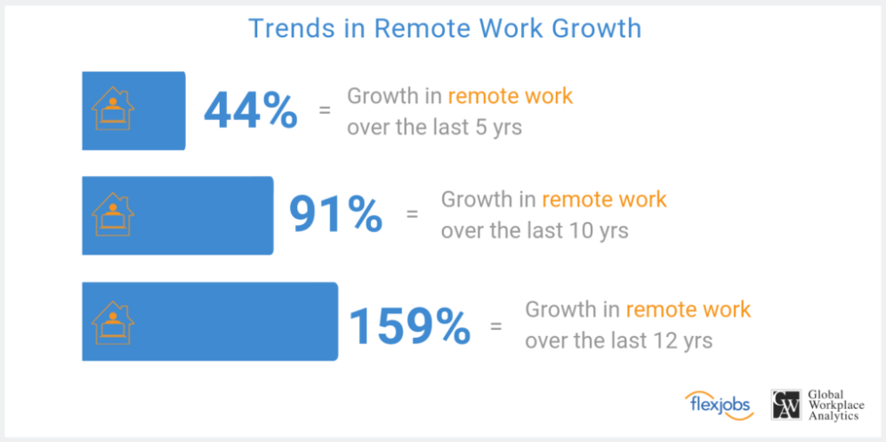
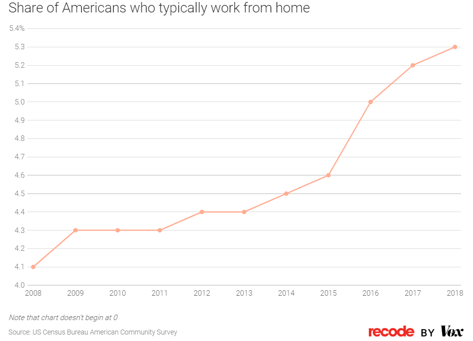
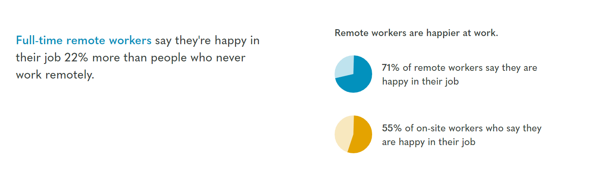
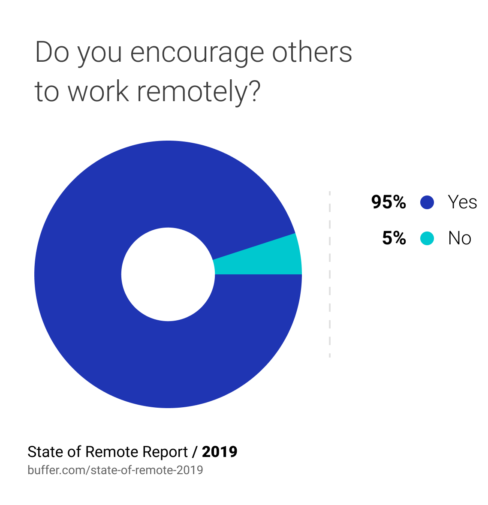
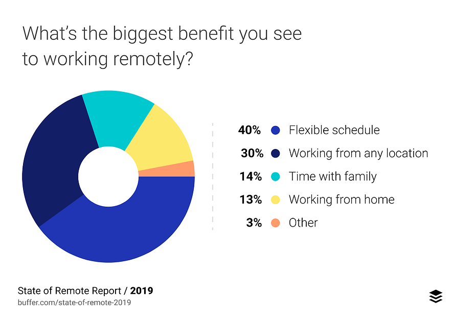
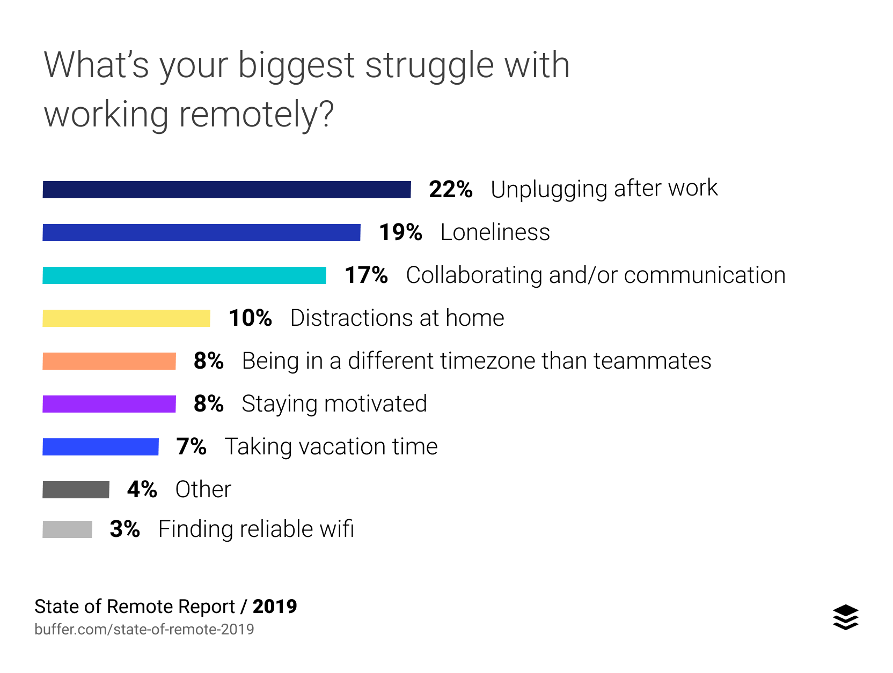

The difficulties faced by workers working remotely, as opposed to on-site employees.
User interviews
Market Research
Even before the situation with COVID-19, remote work was on the rise. A study from Flexjobs and Global Workplace Analytics, remote work has grown almost 100% in the last 10 years and almost 50% in the last four years, a trend which can also be seen in data from the US Census.
 According to a study from Owl Labs, remote workers are also 22% happier in their work than onsite employees, and a study from Buffer noted that 95% of remote employees would recommend working remotely to others. The takeaway here is that remote workers are very satisfied with their remote positions, and that as time goes on this number of remote positions will only continue to grow.
 The same Buffer study notes that employees value flexibility the most in remote work, followed by the ability to work anywhere. On the other hand, remote workers have trouble disconnecting from work (since schedules can be so variable) and communicating/connecting with their teammates.
 I interviewed three people:
Layne is a team manager who works with an AI-focused startup in Silicon Valley, though she is currently located in London. She started working remotely because she felt the need to travel and wanted more flexibility in her schedule and her life, and she appreciates being able to focus on work without anyone interrupting her. However, she feels like it's very hard for team members to communicate, especially those who don't communicate well over text, and often feels like her feedback is not as valued by HQ as people onsite.
Susan works as an editor for a publishing group, and currently lives in Florida. She is often sick, so remote working allows her to work from a more comfortably location in addition to providing more flexibility in her schedule. She emphasizes the necessity of being tech-savvy for remote workers, and of finding the right tools for the job. Making interactions frictionless, she says, are essential for successful remote work. She has trouble separating her work life from her personal life and has difficulty unplugging after work.
Eddy is a musician/activist living in Guangzhou. They work with a company that schedules musicians and assists with putting on concerts, as well as working a few side jobs like translator and podcast editor. They prize being able to work their own schedule and being able to work alone without other people interrupting, but have a hard time being disciplined, structuring their day, and dealing with the amount of freedom they have in their schedule. In addition, it's hard for them to deal with different communication styles among their teammates and to foster a sense of community.